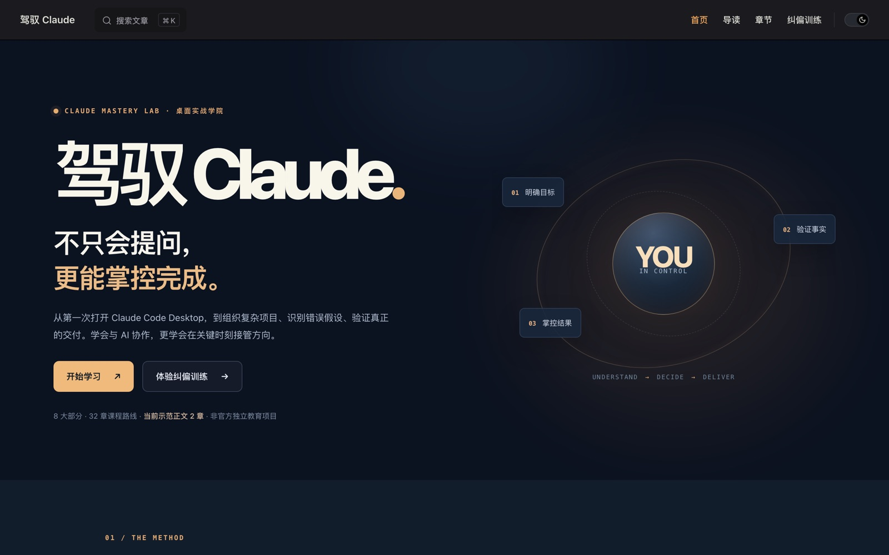

01 / Thought02 / Structure03 / Form
From Thought to Form.
I'm Mi Lin (Liam). I started in data science, machine learning and statistics, and now care most about AI, blockchain, software, business and startups. I like to write and to share, and to turn ideas into things: software, books, and a few experiments still in progress. This is where they live.

Lookbook · A visual index of design systemsWebsite / Tool · Live

Aide · A local AI entry point for the desktopSoftware / macOS app · In development

Research2Video · 研映 · From research to videoSoftware / Workflow · In development

Application Atlas · A library of software application typesSoftware / Library · In development

PersonalSpace · A native macOS personal digital spaceSoftware / macOS app · In development · local build

Radar · An information radarSoftware / macOS app · v0.1

Deep Dive into Data Analysis with RTsinghua University Press · 2020

Data Visualization with R in PracticeChina Machine Press · 2021

Statistical Analysis with R in PracticeBeijing Institute of Technology Press · 2023

Getting Started with SPSS and Data Analysis in PracticeChemical Industry Press · 2025

Mastering CodexOnline book · Read online · v1.0

Mastering ClaudeOnline book · Read online · in progress

LLM Inference Engineering in PracticeOnline book · Read online
Data science and analytics
LLMs and agents
Architecture series
COP StudioA local-first learning workspace that turns a topic or a set of sources into a learning artifact: goal → main process → stage → concept × operation.
GitHub ↗GoalSiftA local-first AI research app: give it a goal, and it finds real resources, matches them one by one, and returns traceable candidate paths.
GitHub ↗decision-compilerA structured-judgment engine that helps people think through important real-world decisions in guided conversation.
GitHub ↗Cognitive Language EngineeringThe full system for cognitive language engineering, currently v0.7, with the learning path Principle → Model → interface → operator → language pattern.
GitHub ↗Narrative Writing WorkbenchA research LLM writing system and its desktop workbench, turning the tacit cognition of writing into steps you can inspect.
GitHub ↗AI Research SystemAn automated AI research report generator with a web console: define jobs in YAML and an agent searches and writes the report.
GitHub ↗